Exercise 3: Materials Science
Material Theory and Project-Specific Materials Analysis
Part I: Basic Material Theory Section
Question 1: Introduce at least 1 metal, 1 plastic, and 1 composite material in daily life
Metal: 6061 Aluminum Alloy
(1) Main Characteristics
- Belongs to aluminum-magnesium-silicon series wrought aluminum alloy, lightweight, strong rust resistance, can change appearance color through anodizing;
- Balanced comprehensive mechanical properties, moderate strength, low difficulty in mechanical processing such as bending, drilling, and milling.
(2) Performance Features
- Lightweight: Density is 2.7 g/cm³,省力 for handling and assembly;
- Corrosion Resistance: Surface spontaneously forms dense aluminum oxide film, not easy to rust in humid environments;
- Excellent Machinability: Supports cutting, welding, bending, CNC engraving;
- Excellent Thermal and Electrical Conductivity: Commonly used for heat dissipation structures;
- Gentle Touch: No heavy cold feeling, no sharp burrs after polishing.
(3) Application Examples
- Lightweight sports equipment: bicycle frames, badminton racket frames;
- Electronic devices: laptop casings, heat sinks, equipment brackets;
(4) Application Scenarios
- Mechanical manufacturing: lightweight tooling fixtures, automated equipment casings;
- Construction: door and window profiles, interior decorative metal lines;
- Automotive manufacturing: new energy vehicle battery casings, body lightweight accessories;
- Medical devices: medical lightweight brackets, rehabilitation assistive equipment;
(5) Precautions
Aluminum alloy stress limit is lower than carbon steel, cannot be used alone for large load-bearing structures; anodizing process requires strict control of electrolyte temperature and electrification time.
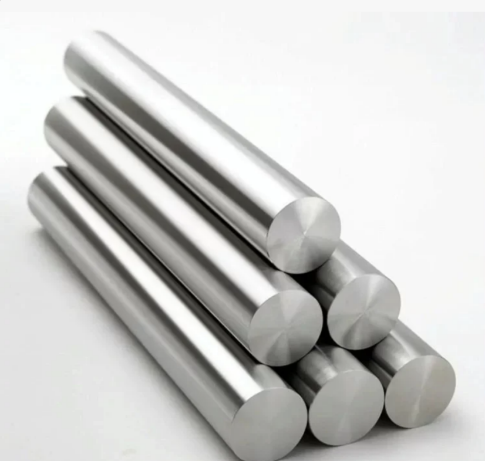
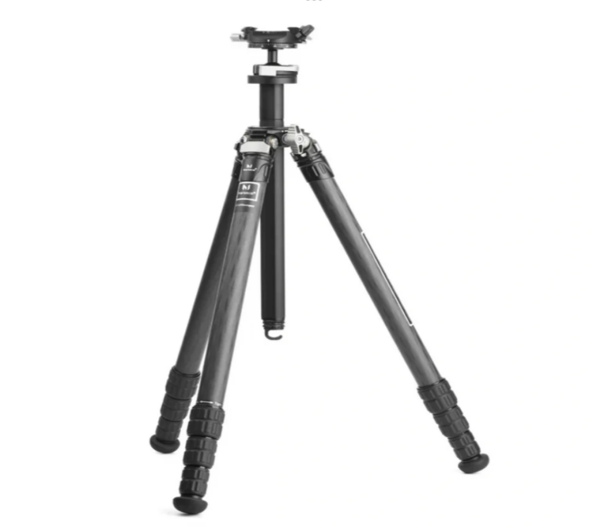
(6) Colors
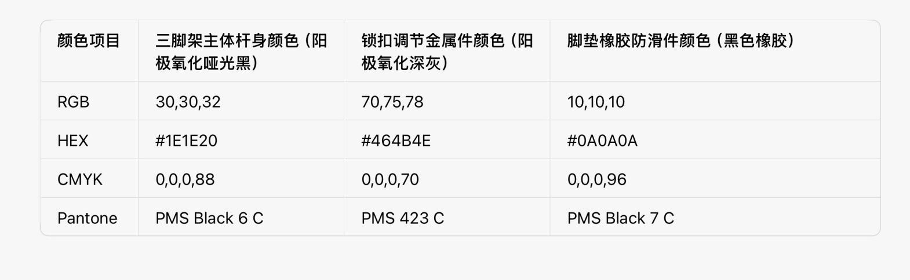
Reference Links:
Plastic: PET Polyester Plastic
(1) Definition and Composition
PET stands for Polyethylene Terephthalate, a thermoplastic polymerized from terephthalic acid and ethylene glycol, divided into three categories: rigid sheets, transparent films, and injection molding raw materials.
(2) Classification
- Rigid PET sheets, food-grade PET bottles, PET textile fibers (polyester).
(3) Physical Properties
- High transparency, smooth surface without waxy texture, strong toughness, not easy to break when bent;
- Long-term safe use temperature range -20℃~110℃, heat resistance better than PVC;
- Relative density greater than 1, can sink in water; does not become significantly hard or brittle at low temperatures.
(4) Chemical Properties
- Resistant to acids, alkalis, daily cleaners, oil corrosion, strong chemical stability;
- Inherent flame retardant properties, not easy to sustain combustion;
- No toxic chlorine elements released at high temperatures, higher safety level.
(5) Application Fields
- Food packaging: transparent fresh-keeping boxes, beverage bottles, fresh food packaging boxes;
- Electronic devices: instrument transparent protective windows, casing decorative panels;
- Textile industry: polyester fabrics, sewing threads;
- Medical devices: disposable medical transparent consumable casings.
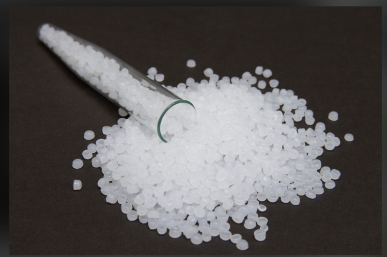
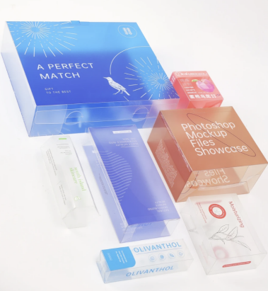
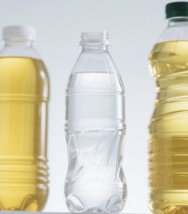
(6) Colors
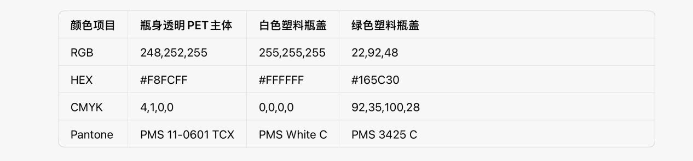
Reference Links:
Composite Material: Glass Fiber Epoxy Resin Composite
(1) Main Characteristics
- High strength, lightweight, weight far lower than steel under equivalent load-bearing;
- Resistant to acid and alkali corrosion, waterproof and moisture-proof, completely non-conductive insulation;
- Extremely high molding freedom, can cast or hand-lay to create any curved shape.
(2) Application Examples
- Shipbuilding: small boat hulls, waterproof interior panels;
- Outdoor cultural and creative products: corrosion-resistant sculptures, landscape decorative components;
- Chemical equipment: anti-corrosion pipeline casings, reagent storage containers.
(3) Structural Composition
Using glass fiber fabric as reinforcement skeleton, liquid epoxy resin as matrix, mixed and cured to form an integrated rigid plate.
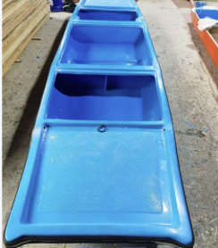
(4) Colors
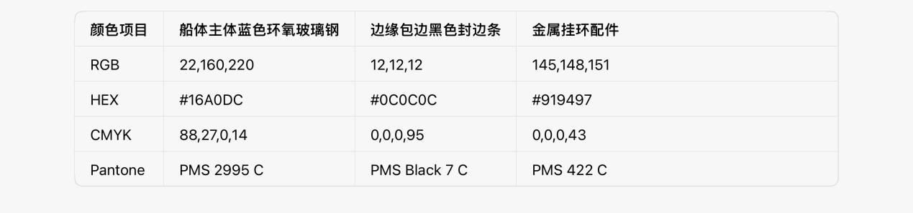
Reference Links:
Question 2: Find at least 1 new material
New Material 1: MXene Two-Dimensional Metal Ceramic Material
(1) Characteristics
- Ultra-thin atomic-level layered structure, thickness only a few nanometers;
- Combines metal conductivity with ceramic corrosion resistance and wear resistance;
- Strong environmental stability, not easy to oxidize and fail in normal temperature air and humid environments.
(2) Applications
- High-sensitivity flexible sensors: pressure, distance sensing elements;
- Electronic chip heat dissipation films, wearable monitoring device electrodes.
(3) Structural Composition
Formed by exfoliating transition metal carbides/nitrides into two-dimensional sheets, typical composition is titanium carbide aluminum-derived MXene.
(4) Specific Example
Ti₃C₂ MXene, conductivity efficiency far higher than graphene, can be used to make flexible non-inductive sensors.
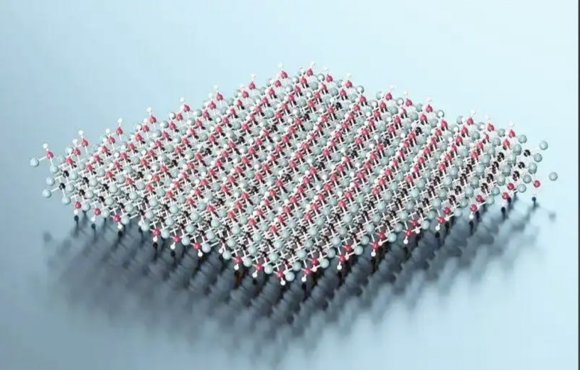
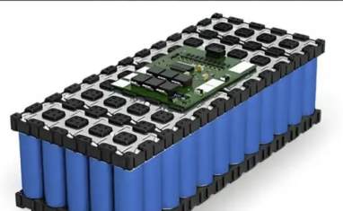
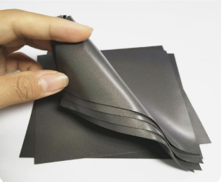
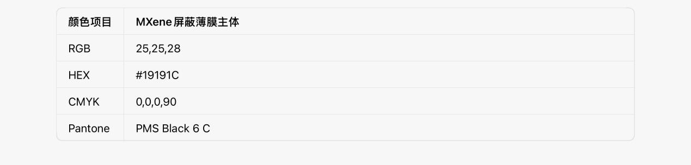
Reference Links:
Question 3: Find 1 post-processing method for 1 metal, 1 post-processing method for 1 plastic, and 1 post-processing method for 1 wood
Metal: 6061 Aluminum Alloy Post-Processing Method: Anodizing
The complete process is divided into four steps: heating, electrolysis, dyeing, and sealing.
- Pre-treatment degreasing and cleaning: Remove cutting oil stains and metal burrs on the aluminum alloy surface to ensure uniform adhesion of the oxide film;
- Electrolytic oxidation: Place aluminum material in sulfuric acid electrolyte and electrify to generate a dense aluminum oxide protective film on the surface;
- Dyeing (optional process): Oxide layer micropores absorb organic dyes to achieve decorative colors such as matte black, silver, and light gray;
- Hot water sealing: Soak in high-temperature pure water to seal surface micropores, lock in color, and improve rust prevention and wear resistance.
Processing Effects
- Organizational changes: Surface generates insulating hard oxide layer, isolates air, eliminates rust;
- Performance improvement: Wear resistance increased by more than 5 times, surface smooth without metal reflection, suitable for children's equipment.
Precautions
Electrolyte concentration and electrification current must be precisely controlled; incomplete degreasing cleaning will cause mottled color differences on the surface.
Plastic: PET Polyester Plastic Post-Processing Method: Chemical Depolymerization Recycling and Re-granulation
Complete steps:
- Sorting and cleaning: Recycle PET waste, remove labels, glue, mixed plastics, hot water degreasing;
- Crushing treatment: Crusher breaks into small plastic fragments;
- Catalytic depolymerization: High-temperature catalysis breaks down PET macromolecules into ethylene glycol and terephthalic acid monomers;
- Purification and distillation: Filter to remove impurities and obtain high-purity raw material monomers;
- Re-polymerization and granulation: Monomers are polymerized again to produce brand new virgin-grade PET particles.
Processing Effects
Waste can be 100% restored to brand new plastic raw materials, no performance degradation, high recycling rate;
Precautions
PVC waste is strictly prohibited from being mixed in, impurities will destroy the entire set of recycled raw materials; equipped with exhaust gas purification devices throughout the processing.
Wood: Ash Wood Post-Processing Method: Wood Wax Oil Sealing Maintenance
Processing steps:
- Material selection: Select ash wood boards without insect damage, cracks, and uniform texture;
- Pre-treatment: Sand progressively from 400 grit to 1200 grit sandpaper to remove knife marks and wood splinters;
- Dust removal: Brush + lint-free cloth to clean all wood chips;
- First thin coat of wood wax oil: Let stand for 30 minutes for full absorption;
- Wipe off excess oil: Ventilate until completely dry, then repeat coating 2 more layers.
Processing Effects
- Seal wood pores, reduce probability of water absorption expansion, mold, and insect infestation;
- Retain natural wood grain, warm and smooth touch, no heavy plastic feel of paint.
Precautions
Each layer of wood wax oil must be applied thinly, thick application will remain permanently sticky; each layer must be completely dry before applying the next coat.
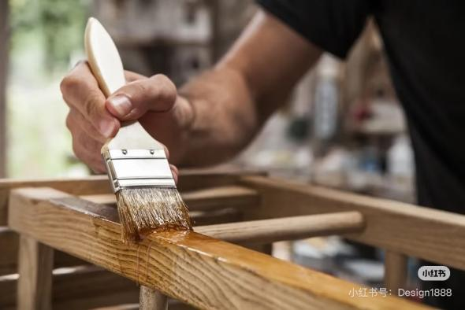
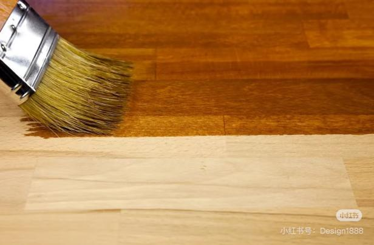
Source Link: 🏷️#WoodworkingDI... http://xhslink.com/o/1jukx6PCBrg
Part II: Project-Specific Materials Section
Question: Detail all materials in your final project
Material 1: PLA Polylactic Acid 3D Printing Filament
(1) Uses
Sandbox overall box casing, 4 interactive guide tracks, HC-SR04 ultrasonic sensor fixing buckles, Arduino main control board base, LED strip embedded slots - all structural parts, the entire device hard主体 is formed by PLA一体3D printing.
(2) Material Characteristics
Biodegradable plastic polymerized from lactic acid extracted from corn starch; melting point 176℃, almost no warping during printing成型; non-toxic and无刺激性挥发气体, can directly contact children's skin; printed成品 can be finely polished, easily removing edge burrs.
(3) Advantages
- Environmentally friendly and biodegradable, no white pollution;
- High 3D printing成型 precision, can一体成型 arc collision avoidance structures, no need for additional board cutting and splicing;
- Moderate finished product hardness, suitable for children's interactive operation scenarios.
(4) Safety & Limitations
- Non-toxic and harmless at room temperature, safe for human contact;
- Poor heat resistance, will soften and deform at temperatures above 60℃;
- Easily断裂 under severe violent impact;
- Long-term direct sunlight will accelerate material aging and brittleness.

Reference Link: Baidu Image Link
Material 2: High-Density EPS Foam Board
(1) Uses
Sandbox overall bottom substrate, groove below track for预埋流水灯带, fill gaps between 3D printed shell and internal circuits,起到缓冲减震、电路隔音防护的作用。
(2) Material Characteristics
Closed-cell foamed polystyrene, internal fine microporous structure, extremely light overall weight; itself waterproof and non-absorbent, excellent cushioning, shock absorption, sound absorption and noise reduction performance; will be dissolved and corroded by AB滴胶, 502 and other organic solvents.
(3) Advantages
- Low procurement cost, can be manually grooved and shaped with utility knife;
- Greatly reduces overall device self-weight, convenient for classroom搬运 and placement;
- Soft texture, can buffer impact force from children's accidental collisions.
(4) Safety & Limitations
- Material itself has no toxic or harmful substances, safe to use;
- Overall material hardness is low, long-term continuous pressure will cause irreversible depression;
- Strictly prohibited from direct contact with liquid滴胶, instant glue and other organic solvents.
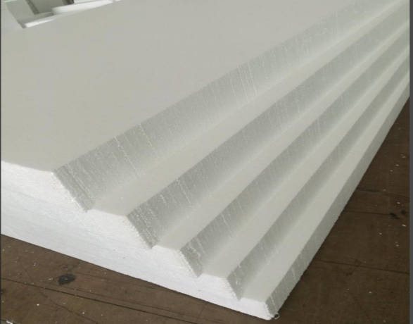
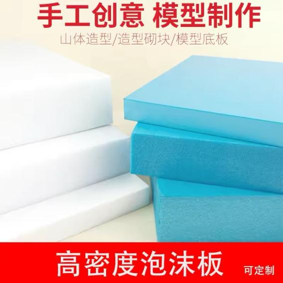
Reference Link: Baidu Image Link
Material 3: AB Two-Component Crystal Drop Glue
(1) Uses
PLA 3D printed part拼接粘接固定; foam board LED strip groove surface sealing layer,实现灯光柔光、防尘防水; old peach wood touch piece surface sealing moisture-proof protection; circuit wiring joint insulation sealing protection.
(2) Material Characteristics
A resin and B curing agent mixed in fixed ratio and cured at room temperature, fully cured后透明度高、硬度强，具备绝缘防水性能；调配比例失误会导致胶体永久发粘无法干透，固化过程会轻微放热。
(3) Advantages
- Strong bonding, high transparency material will not block bottom LED strip light source;
- Simultaneously provides triple protection effects of waterproof, insulation, and wear resistance, improving overall device durability and usage safety.
(4) Safety & Limitations
- Non-toxic and harmless after full curing, suitable for children's equipment use;
- Slight volatile odor during liquid mixing stage,需要保证环境通风;
- Full curing takes a long time, has certain mixing operation threshold.
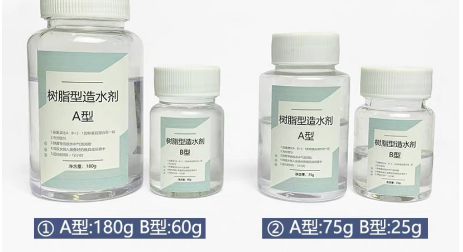
Reference Link: Taobao Link
Material 4: Old Peach Wood Solid Wood
(1) Uses
Device children's hand core interaction area,镶嵌圆珠式亲肤触摸推拉接触面，供小朋友直接手部触碰、推动操作；同时用作沙盘正面及两侧装饰面板，弱化3D打印塑料冰冷工业质感，降低儿童触觉与视觉感官刺激。
(2) Material Characteristics
Natural solid wood material, fine wood fiber, moderate soft and hard touch; finely polished surface is warm and smooth, no wood splinters and sharp edges; without closed protection,易受潮发霉、遇温湿度变化出现开裂、吸水膨胀。
(3) Advantages
- Natural原木触感温润亲肤，圆珠接触面手感顺滑，适配自闭症儿童敏感触觉需求;
- 原木低饱和色调柔和舒缓，不会产生强光视觉刺激;
- Can全方位圆弧倒角，彻底消除磕碰尖角.
(4) Safety & Limitations
- Natural solid wood has no chemical additives, safe to use;
- Solid wood self-weight is relatively large, will slightly increase overall device weight;
- Easily变形开裂 when exposed to water,所有桃木交互件表面必须做滴胶封闭养护.
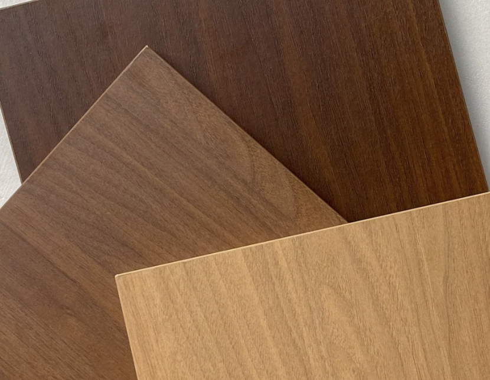
Reference Link: Xiaohongshu Link
Summary
This exercise covers basic material theory including metals (6061 aluminum alloy), plastics (PET polyester), and composites (glass fiber epoxy resin), explores new materials (MXene two-dimensional metal ceramic), studies post-processing methods for different materials, and details project-specific materials used in the final sandbox device including PLA, EPS foam, AB crystal drop glue, and old peach wood.